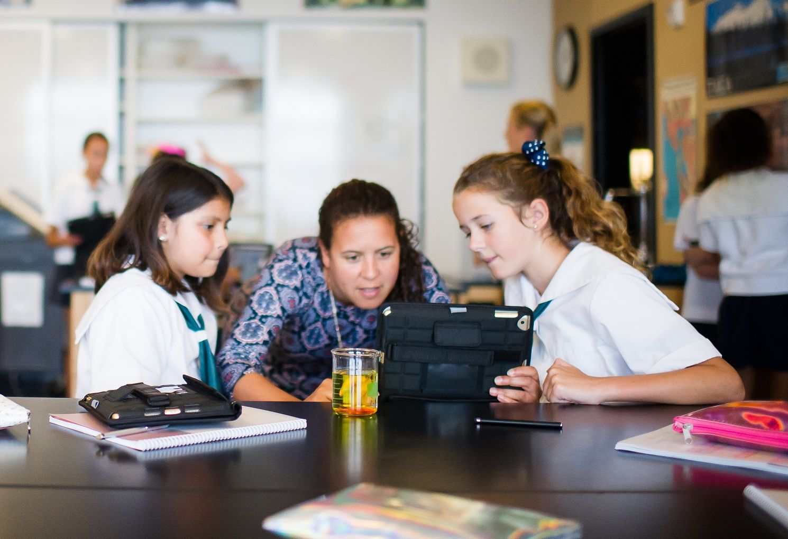

Our K-8 educational program aims to develop the intellect, character and citizenship of each girl to its highest potential. Passionate educators – architects of the student experience at Hamlin – design units of inquiry and study that inspire our girls to be innovative thinkers, collaborators, and leaders who demonstrate compassion, courage, and integrity. Hamlin girls are proud of their individual and collective achievements and embrace their failures as opportunities to deepen learning. The girls value hard work and accept struggle and ambiguity as necessary parts of the learning process. Over the course of their years at Hamlin, girls build confidence, tenacity, and resilience by engaging in an intellectually demanding and stimulating academic program.
Learning at Hamlin is purposeful, joyful, and expansive. Hamlin girls learn inside the classrooms of our urban campus and outside in the greater Bay Area: in national parks, museums, and online. Through service learning and community partnerships, our girls are taught that learning at school has immediate relevance in real-life.
We believe that success in the 21st century requires an intentional focus on critical thinking and problem solving, effective oral and written communication, collaboration, and creativity. While we embrace the importance of content knowledge in our program, we also are ignited by the words of our founder Sarah Dix Hamlin, who asserted that “the mere knowledge of the facts would be insufficient” to prepare the girls to meet the challenges of their time. Thus, our educational program emphasizes the acquisition of knowledge and its application in new and unfamiliar contexts. We strive for breadth and depth. We value engagement as well as reflection.
